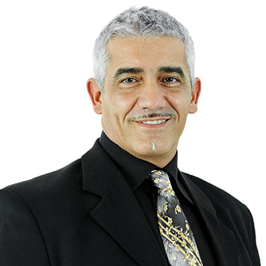

Bringing Innovators, Enthusiasts, and Believers Together
Our core management team comprises proficient software developers, senior executives and blockchain enthusiasts with years of experience in banking, payments and AI technologies. We focus on modern technologies to deliver the best quality services to our clients. Our team is constantly pushing boundaries and scaling new heights in the blockchain industry, setting new trends along the way, which allows you to stay ahead in the game.
Management Team

Peter Brown
CEO
Mr. Charania has served as our Chief Executive Officer, Chief Financial Officer, and director since December 26, 2017. Mr. Charania is a cofounder and currently the Chief Executive Officer at Rokk3r Labs, where he shapes the global vision, direction, and expansion of the company and a general partner of Rokk3r Fuel ExO, where he manages fundraising and investment opportunities. Prior to joining Rokk3r Labs, Mr. Charania built multiple software companies and served as the Director of Engineering at Convergys Corporation, a global customer management and information management service provider from 2004 to 2008 His professional experience includes developing and deploying SMS billing platforms, downloadable ringtone systems, and smart IP-based tools which reduce global deployment costs. He earned a Bachelor of Mathematics from the University of Waterloo.
Kathy doe
Chief Exponential Officer, Secretary and Director
Mr. Charania has served as our Chief Executive Officer, Chief Financial Officer, and director since December 26, 2017. Mr. Charania is a cofounder and currently the Chief Executive Officer at Rokk3r Labs, where he shapes the global vision, direction, and expansion of the company and a general partner of Rokk3r Fuel ExO, where he manages fundraising and investment opportunities. Prior to joining Rokk3r Labs, Mr. Charania built multiple software companies and served as the Director of Engineering at Convergys Corporation, a global customer management and information management service provider from 2004 to 2008 His professional experience includes developing and deploying SMS billing platforms, downloadable ringtone systems, and smart IP-based tools which reduce global deployment costs. He earned a Bachelor of Mathematics from the University of Waterloo.

Adam doe
COO
Carlos Escobar is senior executive with experience building corporate value and financial services organizations. In his previous role as Chief Executive Officer of KawaPACE from 2015 to 2016, a provider of funding for clean energy projects, he was responsible for launching a new company to originate and fund Commercial Property Assessed Clean Energy (C-PACE) projects across the United States. Previously, from 2012 to 2015, Mr. Escobar was the President of ExpoCredit Financial Group, a specialty finance company that provides working capital loans to domestic and international businesses. From 2008 to 2012, Mr. Escobar was the Vice President of Marketing Operations and Product Management for Western & Southern Financial Group, a provider of insurance protection, investments, and retirement solutions. In that role, he was responsible for multicultural marketing campaigns, product development efforts, and field operations support for a team of over 1,500 producers serving over 1 million customers. In addition to his Master’s in Business Administration from Duke University, Mr. Escobar has a Master’s Degree in Chemical Engineering from Cornell University and a Bachelor’s of Science Degree in Chemical Engineering from Lafayette College in Easton, PA.